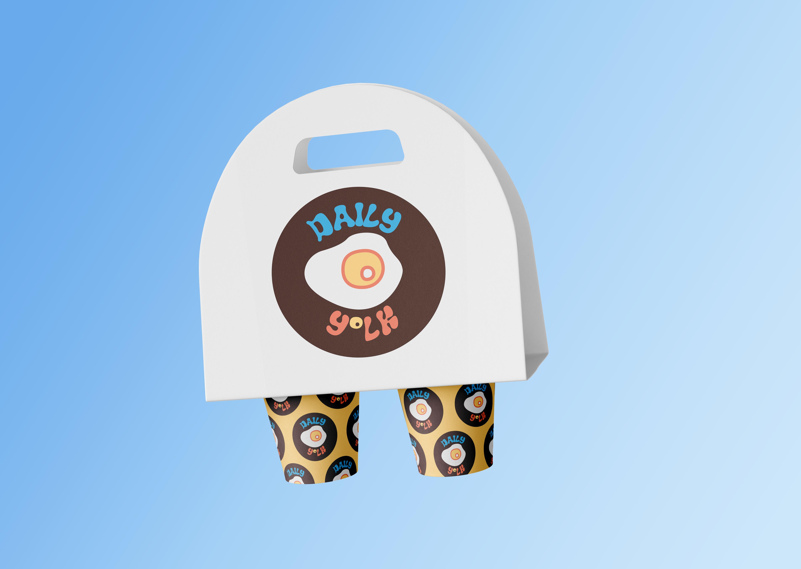
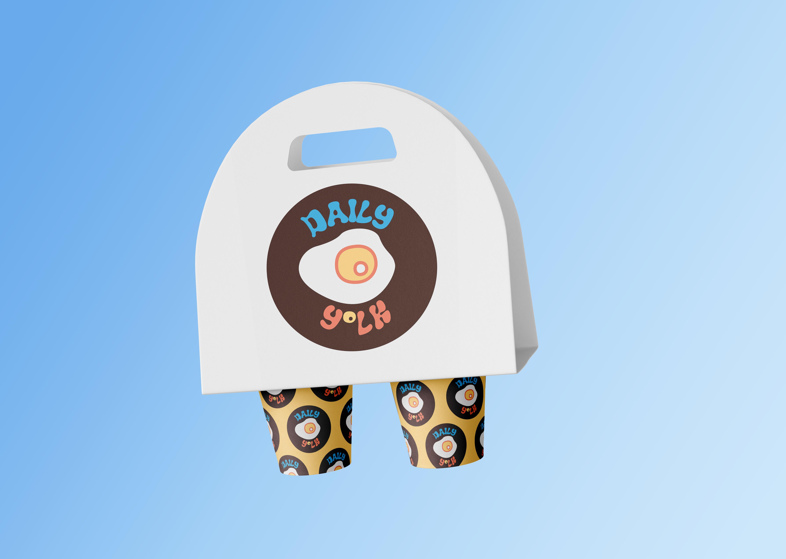

Project Overview
The goal of this project was to create branding and a menu card for a fictional all-day breakfast club called Daily Yolk.
Research and Specifications
I began this project by researching breakfast clubs and menu cards. Then, I chose the fonts, colors, and designed the logo.
First Draft
From there, I branched out and created a small coffee menu tent design for the tables.
Work in Progress
I started looking for the mockups that I would use for the coffee cups and menus. During this process I found more ideas for brand assets I could create.
Obstacles and Solutions
There were two major challenges during this project. The first was choosing new fonts for the magazine halfway through the project after Adobe removed the original ones I chose. Luckly, I frequently search for new Google and Adobe fonts that I think could be used in future projects, so I always have plenty on my computer. This saved me a lot of time searching for new fonts to download. I was able to quickly update the paragraph and character styles and apply the new fonts to the entire magazine.
The second challenge was fitting the data into the table in a way that is well designed and easy to read. I overcame this by changing the font sizes, alignment, and individually adjust the tracking and leading for each data point and header.
Critique and Revisions
The critique I received pointed out that my article parts, the kickers, pull-quotes, etc., were missing. For my revisions, I quickly added those style elements in and saved them as their own paragraph styles.
Next Steps
To finalize this magazine, I created a print version and a web interactive version. In includes 2 articles, a data table and 14 images.
Final Product and Mockups
The final product is an 8 page magazine with both a print and web interactive version.

 
